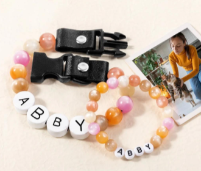
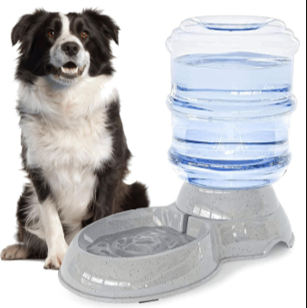

Acerca de mi
Hola! Tengo 19 años y estudio Ingeniería en Tecnología commputacionales. Soy bailiarina y porrista.
Experiencia
He tenido experiencia en mis proyectos escolares trabajando con los siguientes lenguajes:
- C++
- Python
- SQL
- HTML
- CSS
- Java
Gustos personales
Me gusta mucho escuchar música como:
Mi canción favorita
y esta
otra canción que me gusta
Y ese es mi perro cheto al que amo. Tiene 9 años!

Mi libro favorito es "Muerte en el Nilo" de Agatha Christie
Me gusta mucho bailar los siguintes estilos ordenados:
- Jazz
- Ballet
- Ubrano
- Contemporáneo
Sobre: HTTPS, métodos, HTML4 y HTML 5, errores 400 y 500 y Ciclo de vida de los SI
Cuál es la diferencia entre Internet y la World Wide Web?
Internet es una inmensa red de computadoras alrededor de todo el mundo conectadas entre sí.En cambio, la web (la World Wide Web) es una enorme colección de páginas que se asienta sobreesa red de computadoras.
¿Cuáles son las partes de un URL?
Las partes de la URL so. Primero el protocolo que es HTTP o HTTPS(que está encriptada y privada). También puede ser FTP o SMTP
Luego sigue el dominio, que se usa para identificar la IP del recurso y es el nombre del sitio, el path es la ubicación del recurso en el servidor
Los parametros sirven para filtrar en el server o especificar detalles. (todo va al puerto 80 por default)
¿Cuál es el propósito de los métodos HTTP: GET, HEAD, POST, PUT, PATCH, DELETE?
El propósito de GET es para solicitar datos de algun sitio (no tiene cuerpo), el de HEAD (también sin cuerpo) es para obtener solo encabezados de una respuesta, el de POST es para mandar data a algun serivdor y crear un recurso.
el de PUT es para editar, actualizar un recurso en un servidor y en el cuerpo esta el mensaje que se agregará, el de PATCH es para aplicar modificaciones parciales al recurso
y el de DELETE es para eliminar el recurso especificado. Ancla accede a secciones específicas de la página.
¿Qué método HTTP se debe utilizar al enviar un formulario HTML, por ejemplo cuando ingresas tu usuario y contraseña en algún sitio? ¿Por qué?
El método POST porque estás mandando datos (usario y contraseña)
¿Qué método HTTP se utiliza cuando a través de un navegador web se accede a una página a través de un URL?
El método GET, porque busca un recurso en línea y no lo modifica.
Un servidor web devuelve una respuesta HTTP con código 200. ¿Qué significa esto? ¿Ocurrió algún error?
No hubo ningún error, todo está en orden con la respuesta.
¿Es responsabilidad del desarrollador corregir un sitio web si un usuario reporta que intentó acceder al sitio y se encontró con un error 404? ¿Por qué?
No, no lo es, este error sale debido a una busqueda mal hecha por parte del usuario. A menos que el enlace esté mal. 403 es prohibido.
¿Es responsabilidad del desarrollador corregir un sitio web si un usuario reporta que intentó acceder al sitio y se encontró con un error 500? ¿Por qué?
Si, si el sitio reporta un error 500 significa que el servidor tuvo un error al intentar satisfacer la petición.
¿Qué significa que un atributo HTML5 esté depreciado o desaprobado (deprecated)? Menciona algunos elementos de HTML 4 que en HTML5 estén desaprobados .
Significa que a pesar de que se puedan usar en navegadores pasados o actuales, ya no serán compatibles con los futuros pues dejarán de tener actualizaciones
Ejemplos de estos son:
- <center> - para centrar contenido (usar CSS text-align en su lugar)
- <font> - para cambiar fuente, tamaño y color (usar CSS)
- <strike> - para texto tachado (usar <del> o CSS)
- <frame> y <frameset> - para marcos (usar <iframe> o diseño moderno)
¿Cuáles son las diferencias principales entre HTML 4 y HTML5?
html4 no tenía la especificación de usar javascript y css. Hay bastante etiquetas que cambiaron de manera semántica en vez de expresar estilo.
- Nuevas etiquetas semánticas: HTML5 introdujo <header>, <nav>, <article>, <section>, <footer>, <aside> para mejor estructura del contenido
- Multimedia nativa: Etiquetas <audio> y <video> sin necesidad de plugins
- Nuevos tipos de input: email, date, number, tel, url, color, range, search, etc.
- APIs de JavaScript: Canvas para gráficos, Geolocation, LocalStorage, SessionStorage, Web Workers
- Soporte para aplicaciones web: Mejor manejo de formularios con validación nativa
- Eliminación de elementos visuales: Se removieron etiquetas de presentación (center, font) favoreciendo CSS
- DOCTYPE simplificado: <!DOCTYPE html> en lugar de la declaración larga de HTML4
- Mejor soporte para dispositivos móviles y accesibilidad
| (títulos), | (celdas).
¿Cuáles son los principales controles de una forma HTML5?
Planeación y análisis, desarrollo prueba y entrega ¿Cuál es el ciclo de desarrollo de sistemas de información? Concepcion del proyecto, desarrollo,puesta en operaciones , manetnimiento y retiro CSS(Cascade Style Sheets)
Como ingeniero de software ¿cuál es tu recomendación sobre el uso de !important en un CSS? Material DesignDescripción:Es lenguaje de diseño y un sistema de diseño abierto (opnea source) usados para crear interfaces y está respaldado por diesñadores de Google A través de Material.io, ofrece orientación detallada sobre experiencia de usuario e implementaciones de componentes visuales para plataformas como Android, Flutter y la Web. A partir de 2015 la mayoría de las aplicaciones móviles de Google para Android se había aplicado el nuevo lenguaje de diseño, incluyendo Gmail, YouTube, Google Drive, Google Docs, Sheets y Slides, Google Maps, Inbox, todas las aplicaciones de Google Play con la marca, y una más pequeña medida el navegador Chrome y Google Keep. El escritorio de una interfaz web de Google Drive, Docs, Sheets, diapositivas y la bandeja de entrada lo han incorporado también. Algunos componentes que tienen disponibles en su sitio para usarlos ya:
Javascript intro
¿Cual es la diferencia entre Java y Javascript
Java es compilado y Javascript es interpretado. Javascript lo entiende el explorador web y se puede ejecutar ahí.
Tienda en Línea: PawFriendHola! Nuestros productos tienen las mejores ofertas para ti. Encuentra lo que necesitas. Bracalete de la amistad para mascotaComparte un bracalete matching para reforzar el vínculo con tu mascota  $600
Sueter NavideñoViste a tu mascota según la temporada invernal $350
Bebedero/comedor inteligenteQue a tu mascota nunca le falten alimentos incluso si tu no estás.  $430
Cobija con cara de mascotaPersonaliza una frazada para compartirla con tu peludo $700
ResumenBracalete: 0 unidades — $0 Sueter: 0 unidades — $0 Bebedero: 0 unidades — $0 Cobija: 0 unidades — $0 Subtotal: $0 IVA (16%): $0 Total: $0 |
|---|